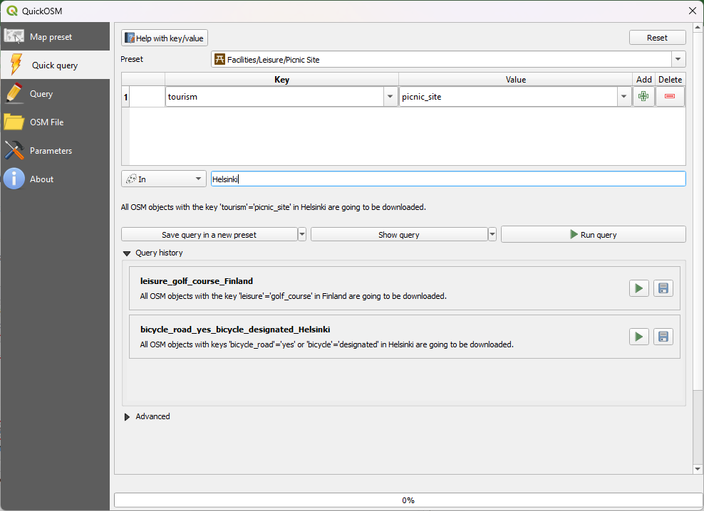
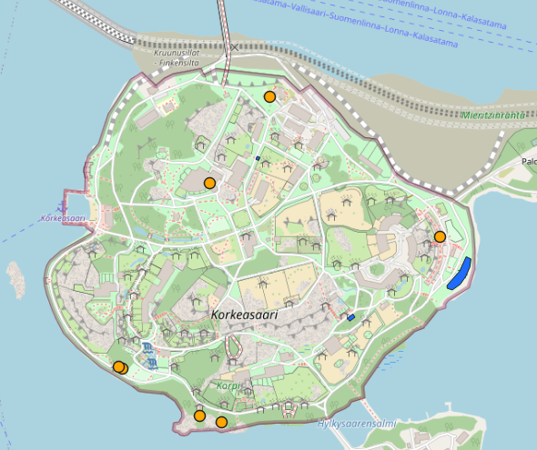
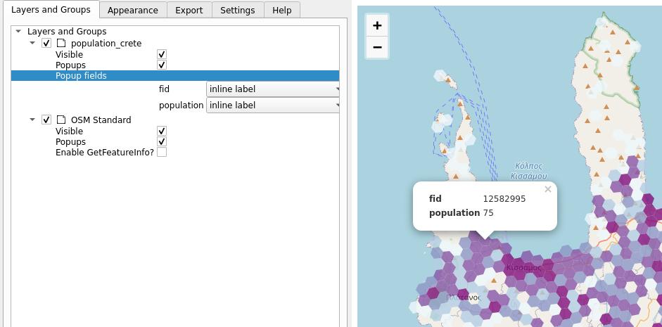

Exercise 8: Plugins in QGIS
Exercise content
This exercise familiarizes you with QGIS’ diverse selection of plugins and focuses more closely on a few of the central ones.
The goal of the exercise
After the exercise you understand the basics of QGIS’ plugins and know how to use them.
Preparations
Open a new QGIS project (Project > New) and save it as "QGIS-exercise 10". Add the following data to the project:
- ..course_directory/kontur/population_crete
Plugin management
You can add plugins to QGIS from the top menu bar by selecting Plugins > Manage and Install Plugins…. Choose the Installed tabto see all of your installed plugins. Notice that most of them are not activated. Activating plugins adds different toolbars and menus to QGIS, which is why it is best to leave unused plugins deactivated.
QuickMapServices
QuickMapServices is a plugin for adding different online basemaps (Such as OpenStreetMap) to your projects. Select Plugins > Manage and Install Plugins… > All and search for QuickMapServices:

Click Install Plugin and then Close. A new menu under Web (in the top bar) has appeared. Select Web > QuickMapServices > OSM > OSM Standard. OpenStreetMap is now visible in your project. Arrange your layers so that the population data is clearly visible. Try other background maps too.
 ## QuickOSM
## QuickOSM
Find and add QuickOSM. With this plugin you can search and add objects from OpenStreetMap as a vector layer. Open Vector → QuickOSM → QuickOSM. In th e QuickOSM window you can find objects with Key and Value or use Preset. For example lets find all the picnic areas in Helsinki, Finland. Start writing picnic in the Preset search and click on the Picnic-sites. The key and value of the search are automatically filled. Then add city we are interested in, this time Helsinki and click Run query
 Two new temporary layers should appear to your Layers panel: point and area layers. You can visualize and use them in analyses if needed. If you want to save the layers for later use, click the layer → Export → Save features as.

Try to add some other features from OpenStreetmap! For example add golfcourses or biking lanes from some city. If there isn’t a suitable preset try to use key and value to find the feature.
Bonus: Qgis2threejs
Now add the Qgis2threejs plugin. This plugin brings simple, browser compatible 3d visualization capabilities to QGIS (built on the threejs library). This plugin will also be accessed through the Web menu. Open the Qgis2threejs Exporter and from the DEM Layer menu select Flat Plane. Then, in the Polygon section, choosethe population data set and double-click it to open its settings. Set the Z-coordinate Mode to Absolute and Height tothe population field.

You can preview the 3d model in the exporter window and, if you’d like, export it as an HTML file by selecting File > Export to web.

Bonus: Qgis2web
The Qgis2web plugin is an easy to use plugin for creating web maps using the Leaflet and OpenLayers libraries. Qgis2web is a useful tool for learning these libraries and producing content for publishing on the web. Open Qgis2web from Web > Qgis2web > Create web map. Under the Popup fields section, choose the Inline label option for the fields of the population layer and press Update preview. Once the map has updated, click on the population grid. If no popup is visible, try switching to Leaflet (from the bottom of the window) and updating the preview.

Now switch to the Appearance tab and configure the settings as shown below:

Export your map by selecting Export.This functionality saves the map as an HTML file that automatically opens up in a browser window. Zoom around your web map and try out the features: click on the grid, measure distances and search for addresses (try searching for Crete’s capital, Heraklion, for example)